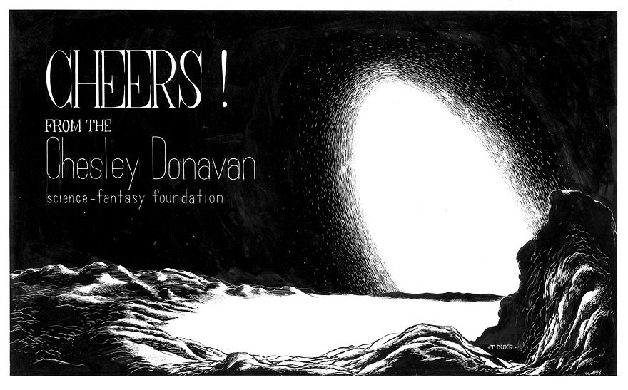

An early CD greeting card in a Chesley Bonestell style -
by Tad Duke - made with black wax-like paint, scraped off for
white in some places and heavily retouched in others. The original
artwork is 9-3/4 x 5-3/4 inches on 11 x 7 inch glossy cardboard.